Alexander
Why do they always ask me to stick my fingers? It really hurts!
Pain makes him resist starting the test at all.
A guided glucose-testing kit for children, paired with an app for parents.
GlucoPal is the child-facing physical kit: its screen breaks a finger-stick test into visible steps while the case keeps tools in fixed locations. Gluardian is the caregiver app: it receives each completed test result, then organizes records and trends.
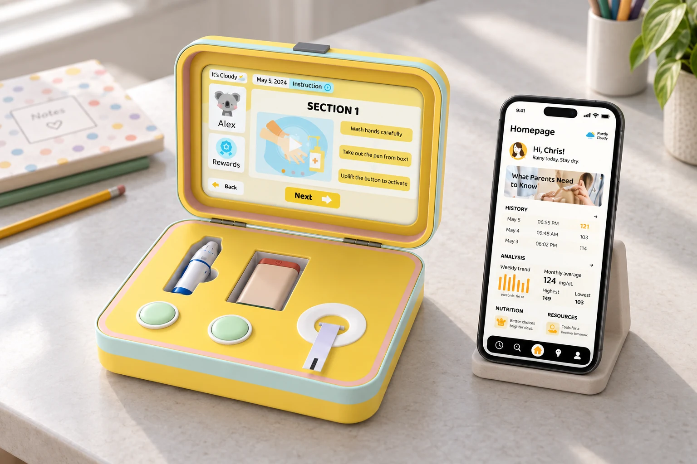
One completed test, handed from the child who runs it to the parent who reviews it.
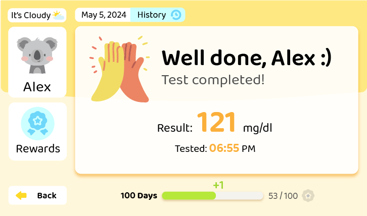
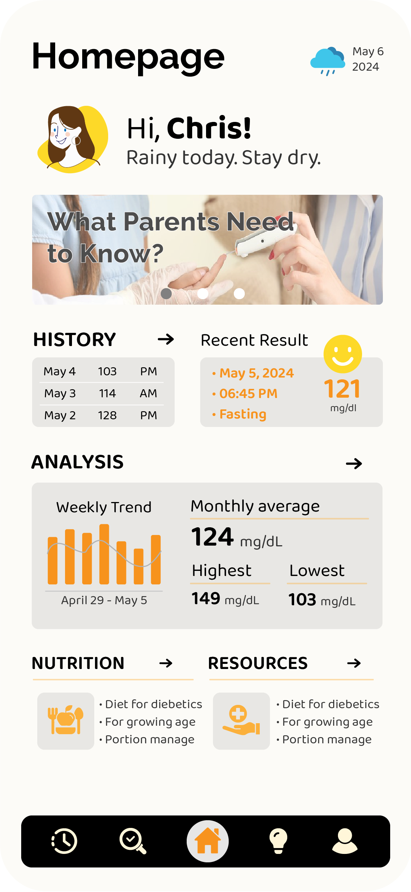
1.21M
Children and adolescents under 20 living with type 1 diabetes worldwide.
IDF Diabetes Atlas, 10th edition · 2021Type 2 incidence among young people doubled across the study period. The brief narrowed to children aged 6 to 12 — old enough to run the test, young enough that a clinical device reads as frightening. A review of market leaders including Care Touch and Abbott found the same four frictions repeated.
How might a glucose test become something a child starts on their own? Reframe a clinical routine as a guided, rewarded task — a kit that does not announce itself as medical, paired with a caregiver view that makes consistency visible.
Why do they always ask me to stick my fingers? It really hurts!
Pain makes him resist starting the test at all.
I really don’t like the color of my glucometer, not cute at all!
Reads the device as clinical, so she avoids carrying it.
It’s hard to track his blood sugar… Too many business trips for my job.
Needs to know a test happened without being in the room.
The process material tests three connected questions: how the case opens and stores tools, how the child moves through the test, and how the early wireframes divide information between screens.
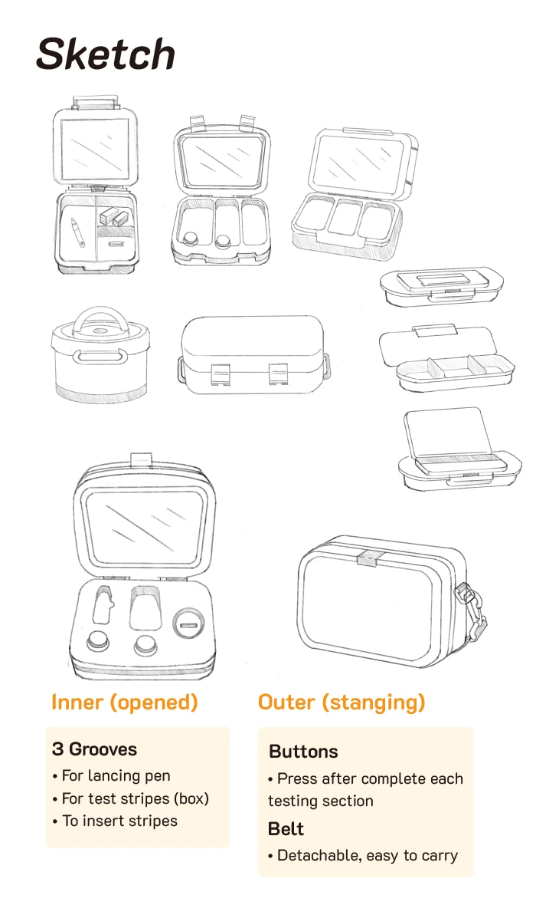
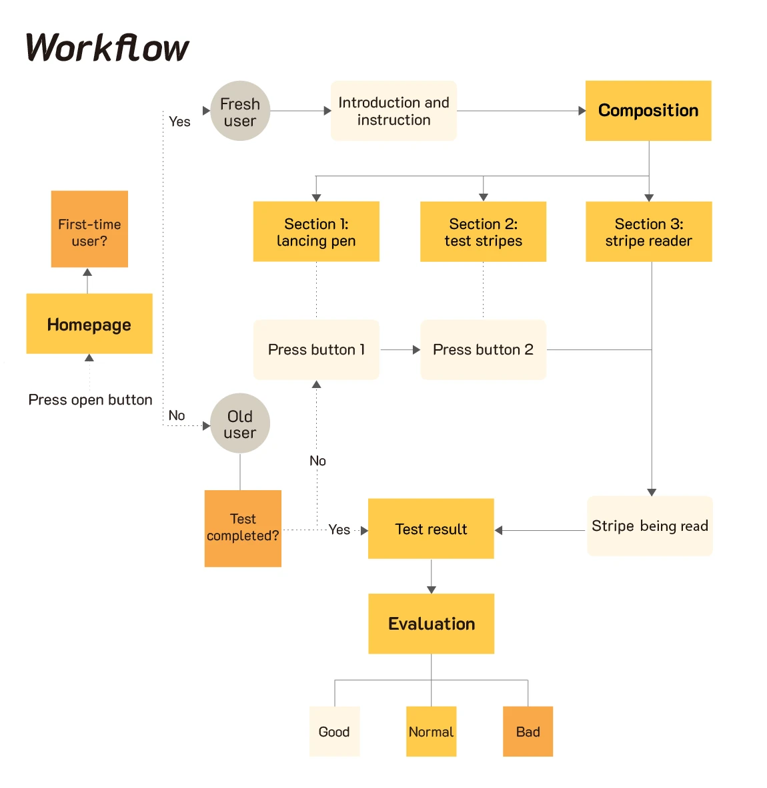
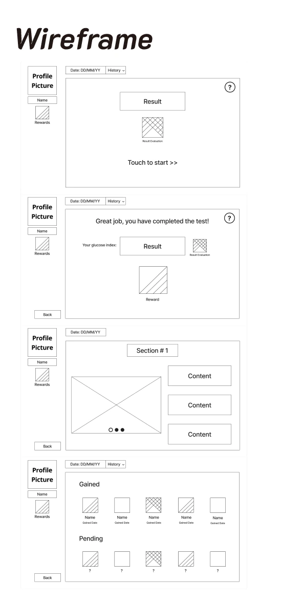
The interface turns each part of the glucose test into one clear, visual action.
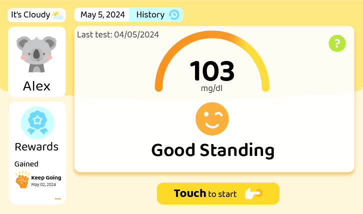
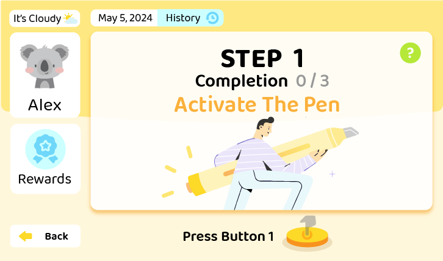
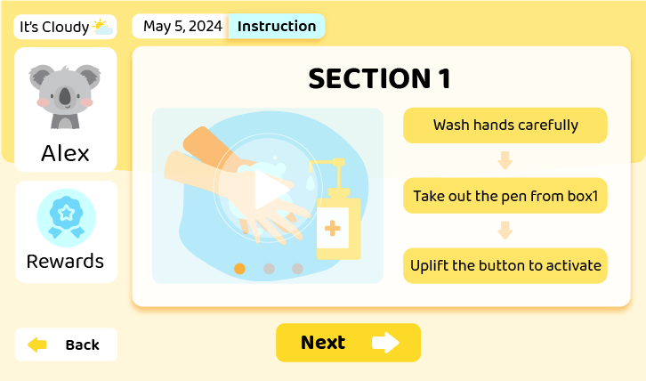
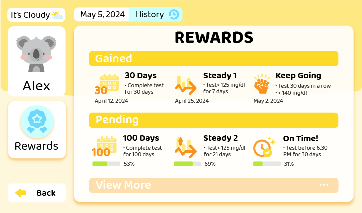
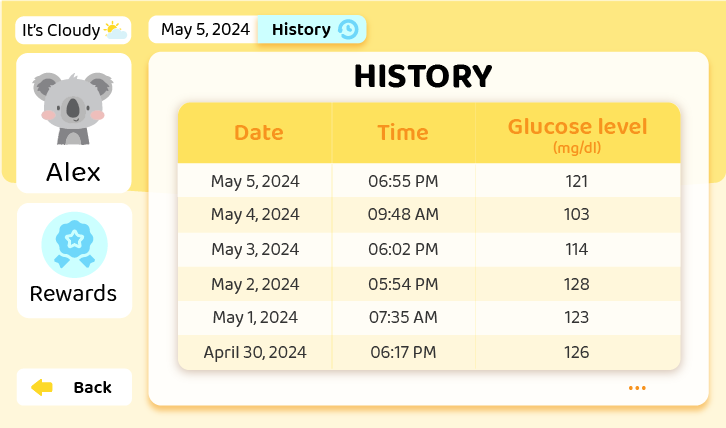
One clear action starts the guided test.
The companion app brings results, routines, resources, and care information into one place for guardians.
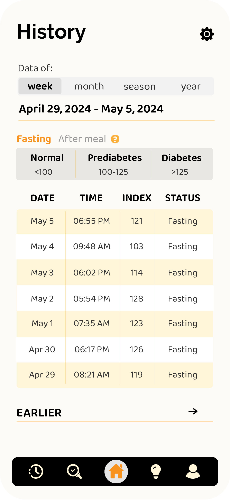
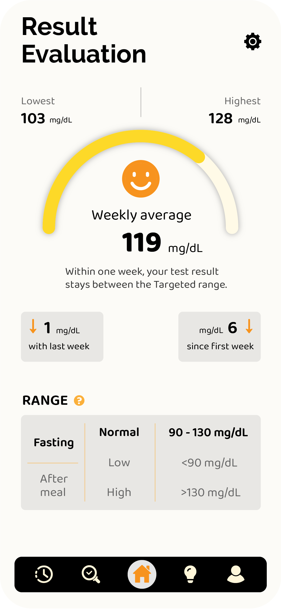
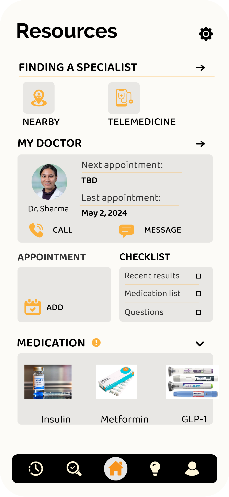
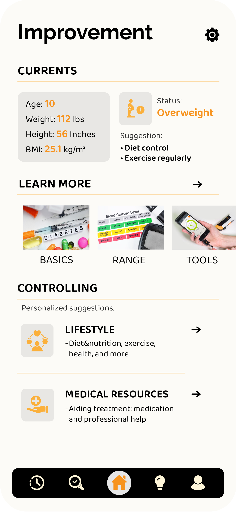
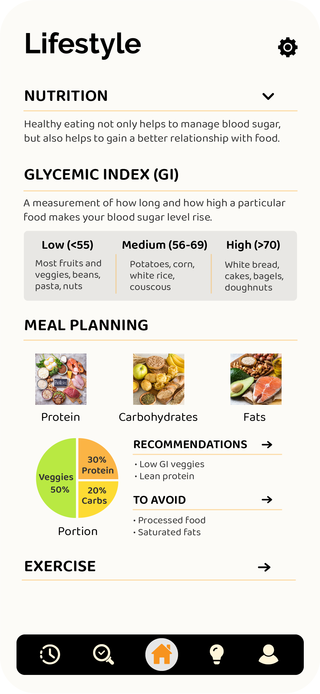
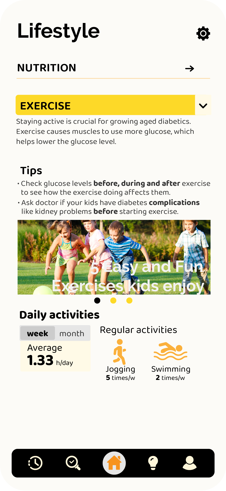
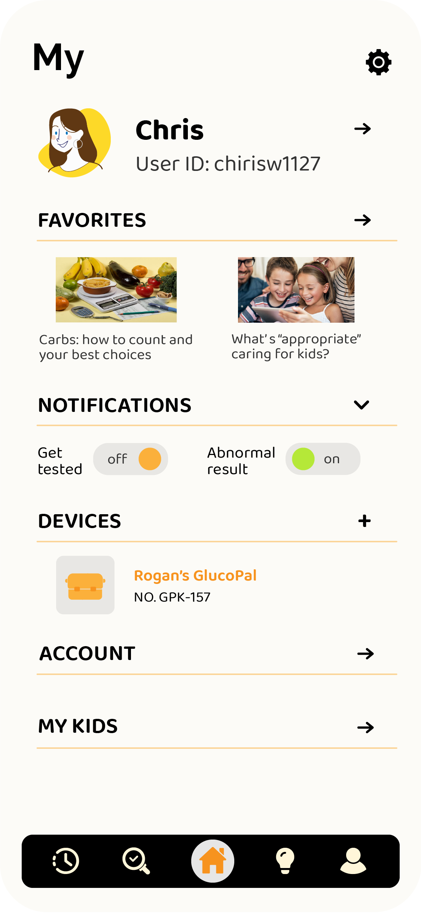
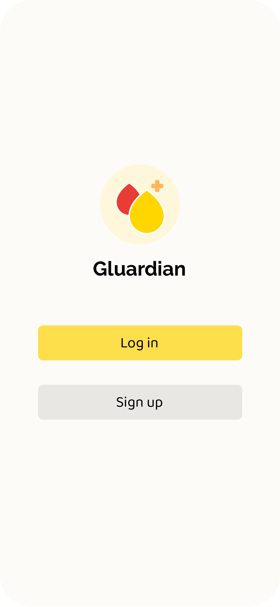
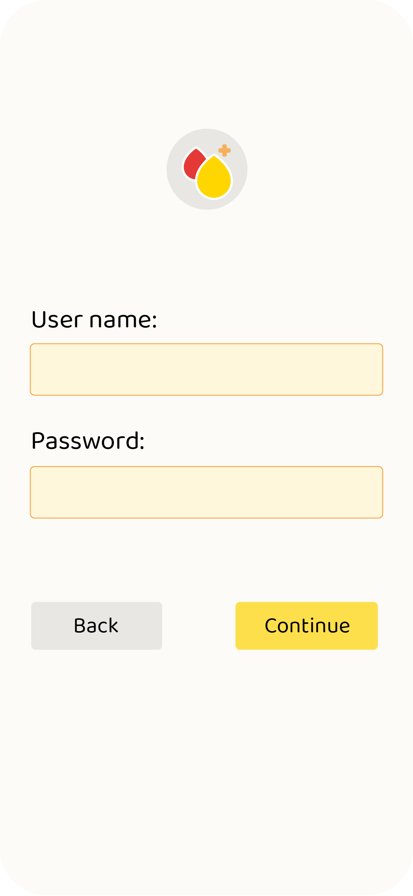
Latest records, weekly patterns, and parent tasks appear in one scan.